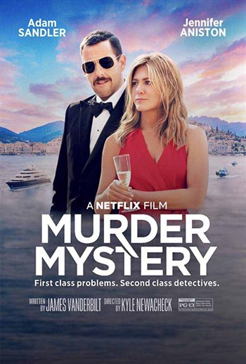

Выживший
Дата выхода

Cюжет
Первая треть XIX века, долина реки Миссури. На траппера Хью Гласса (Леонардо Ди Каприо) нападает медведица. Группа делится на две части, с тяжело раненым Глассом остаются его сын-полукровка Хоук и два охотника — Джон Фицджеральд и Джим Бриджер. Они должны дождаться смерти Гласса и похоронить его, но вместо этого Фицджеральд убивает Хоука и убеждает Бриджера бросить умирающего. Вопреки обстоятельствам Глассу удаётся выжить, и он готов бросить вызов первобытной природе, суровой зиме и враждебным племенам индейцев, только чтобы выжить и отомстить Фицджеральду.
По пути Гласс переживает множество испытаний и лишений. Он не раз вынужден спасаться от враждебного индейского племени арикара, которое разыскивает пропавшую дочь вождя. Под подозрение индейцев попадает группа, в которую входит Гласс. Позже выясняется, что девушку похитили французы, у которых индейцы выменивали оленьи шкуры на лошадей. Случайно дочь вождя оказывается спасённой Глассом, который тайком пробирается во французский лагерь и угоняет лошадь. После очередной стычки с индейцами, чтобы выжить в суровом климате и обогреться, Хью Гласс вынужден вспороть брюхо павшей кобыле и залезть внутрь.
В итоге Гласс всё-таки добирается до лагеря, где среди прочих расположились остатки его группы, включая Фицджеральда и Бриджера. Узнав о спасении Гласса, Фицджеральд грабит своих же и бежит из лагеря. После недолгого преследования Гласс наконец настигает Фицджеральда. Между мужчинами происходит яростная рукопашная схватка, в которой Гласс тяжело ранит Фицджеральда. По-видимому, решив доверить судьбе участь Фицджеральда, Гласс отдаёт последнего в руки арикара, которые тут же снимают скальп с Фицджеральда, убивая его. Таким образом, возмездие свершается.
В последних кадрах фильма Гласс бредёт по заснеженному лесу и видит свою умершую жену. Финальным кадром крупным планом показывается измученное лицо Гласса, смотрящее прямо в камеру.
В ролях
- Леонардо Ди Каприо
- Том Харди
- Уилл Поултер
- Донал Глисон
- Форрест Гулдак
- Пол Андерсон
- Брендан Флетчер
- Кристоффер Йонер
- Лукас Хасс
- Брэд Картер
Длителность:
Количество просмотротров:100000000
Количество лайков:5000
Побег из Шоушенга
Дата выхода

Cюжет
1947 год. Судом штата Мэн слушается дело по обвинению вице-президента банка Энди Дюфрейна (Тим Роббинс) в убийстве своей жены и её любовника. Однако он не признаёт своей вины, но и не помнит, что он делал в ночь убийства, так как был пьян: незадолго до убийства Дюфрейн со скандалом уличил жену в связи с другим мужчиной, но на просьбу жены о разводе ответил отказом. Жена ушла из дома в тот же вечер, а Дюфрейн, зайдя в бар (где много принял), поехал к тому дому, куда уехала его жена, но там никого не оказалось и он решил дождаться жену с любовником; с собой у него был револьвер. Через какое-то время Дюфрейн трезвеет и уезжает домой, а утром служанка находит жену Дюфрейна с любовником застреленными. Пистолет, который Дюфрейн по пути домой выбросил в реку, полиция не находит; другие улики также указывают на виновность обвиняемого. Дюфрейн приговаривается судом к двум пожизненным заключениям. Он попадает в Шоушенк — одну из самых мрачных тюрем Новой Англии, в которой свирепствуют жестокость и беззаконие. Начальник тюрьмы Сэмюэл Нортон демонстрирует показную религиозность, начальник охраны Байрон Хедли забивает до смерти одного из новоприбывших, вместе с Дюфрейном, заключённых в первую же ночь после прибытия в тюрьму. Дюфрейн становится работником тюремной прачечной. рый находится на границе с Мексикой, понимает, где Энди пересёк мексиканскую границу и куда он направлялся. После очередной комиссии по досрочному освобождению Ред выходит на свободу. Он поселяется в том же номере, в котором жил покойный Брукс, и некоторое время работает в том же магазине упаковщиком, но затем решает найти тайник, о котором Энди рассказывал ему в тюрьме. В тайнике он находит послание от Энди с деньгами и отправляется в Мексику, в городок на берегу Тихого океана, где и встречает Энди.
В ролях
- Тим Роббинс
- Морган Фримен
- Боб Гантон
- Уильям Сэдлер
- Клэнси Браун
- Джил Беллоуз
- Марк Ролстон
- Джеймс Уитмор
Длителность:
Количество просмотротров:100000000
Количество лайков:5000
Murder Myster
Дата выхода
Cюжет
Ник Шпитц (Адам Сэндлер) - сотрудник полиции Нью-Йорка, а его жена Одри (Дженнифер Энистон) - парикмахер. Одри хочет посетить Европу, как Ник обещал на их свадьбе, но думает, что этого никогда не произойдет. После ужина, посвященного пятнадцатилетию брака, Одри ругается с Ником, который лжет, что он на самом деле забронировал поездку, и пара отправляется в Европу. В самолете Одри встречает миллиардера Чарльза Кавендиша, который приглашает пару присоединиться к нему на его семейной яхте на вечеринке по случаю предстоящей свадьбы его пожилого дяди с бывшей невестой Чарльза. Посмотрев, как многолюдно будет в их ранее запланированном автобусном туре, Ник соглашается. На борту яхты Ник и Одри встречаются с бывшей невестой Кавендиша Сузи, его двоюродным братом Тоби, актрисой Грейс Баллард, полковником Уленга, его телохранителем Сергеем, махараджей Викрамом из Мумбаи, автогонщиком Хуаном Карлосом Риверой и хозяином вечеринки Малькольмом Куинсом, дядей Кавендиша. Куинс объявляет, что его новая жена Сузи будет единственной наследницей, полагая, что другие только притворяются, что интересуются им, но только из-за денег. Прежде чем он подписал свое завещание, свет погас и снова включится, все увидели мертвого Куинса, убитого его собственным кинжалом. Ник, который солгал Одри о том, что является детективом полиции Нью-Йорка, приказывает закрыть комнату, а гостям вернуться в свои комнаты. Позже той ночью гости находят Тоби, единственного сына Куинса, мертвым в результате очевидного самоубийства. По прибытии в Монте-Карло гостей допрашивает инспектор Лоран Делакруа, который считает Ника и Одри виновными в убийствах. На Гран-при Монако Ник и Одри расспрашивают гостей. Той ночью Сергей созывает их в свою комнату, где рассказывает, что Куинс женился на невесте полковника, когда полковник находился в коме, что закончилось ее смертью и якобы мертворожденным ребенком. Пара прячется, когда кто-то стучит в дверь, и выходит, чтобы обнаружить, что Сергей был убит. Они смело вылезают из окна и идут по краю вдоль выступа, высоко над землей. Они видят, как полковник нитью чистит зубы, а Махараджа и Грейс целуются, исключая вероятность того, что кто-то из них был убийцей и убил Сергея. Убегая, пара видят в новостях, что Делакруа выдал ордер на их арест. Одри в ярости, узнав, что Ник на самом деле не детектив и соврал насчет бронирования поездки заранее, и она уезжает с Кавендишем. Ник следует за Сузи в библиотеку, где он находит Одри, которая обнаруживает, что Кавендиш также находится в здании. Они понимают, что Кавендиш и Сузи все еще влюблены и, по-видимому, убийцы. Пара вынуждена бежать от спрятавшегося вооруженного человека, после чего встречается с Риверой. Затем они спорят с Сузи, которую убивает неизвестный в маске. Ник и Одри отправляются в особняк Куинса, чтобы поговорить с Кавендишем, но находят его мертвым от отравления Пара вызывает Делакруа и оставшихся гостей: Полковника, Грейс, Викрама и Риверу, при этом у всех есть алиби. Ник и Одри делают вывод, что Грейс - убийца; ей помог Тоби, а затем она убила его. Грейс рассказывает, что она - ребенок Куинса, который «умер» и что его деньги по праву принадлежат ей, хотя и отрицает, что является убийцей. Тем не менее, Одри доказывает ее вину (она скрывала порез, который Ник нанес ей как неизвестный в маске под заметной шляпой), и она арестована. Во время празднования Ник и Одри узнают, что у Грейс было еще одно алиби, и должен быть еще один убийца. Они понимают, что Ривера - второй убийца, который обвинил Куинса в несчастном случае, в результате которого его отец потерял обе ноги. Ривера держит в заложниках Делакруа, начинается автомобильная погоня, но в результате машина Риверы разбита, а Делакруа спасен. Ривера держит их всех на прицеле, но его сбивает туристический автобус, на который Ник и Одри изначально до этого взяли билеты. Делакруа благодарит пару и предлагает помочь продвинуть Ника в детективы по возвращении домой. Фильм заканчивается тем, что Ник и Одри продолжают свой отпуск на борту легендарного «Восточного экспресса», предоставленного Интерполом
В ролях
Длителность:
Количество просмотротров:100000000
Количество лайков:5000